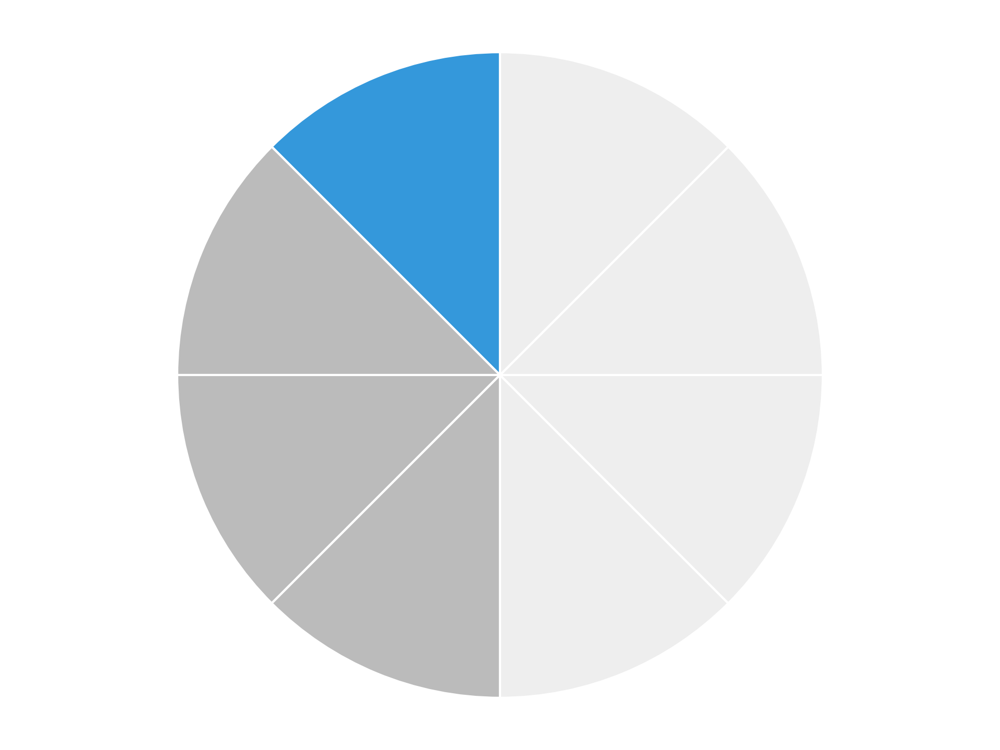

Objectives
- Multiply fractions
- Multiply mixed numbers by rewriting them as improper fractions
- Divide fractions by multiplying by the reciprocal
Warm-Up
1. What is half of a half?
2. What happens when you multiply two positive numbers that are both less than 1?
3. If you divide 1 by {{f 1/2}}, is the answer bigger or smaller?
1.4.1Multiplying Fractions
Multiplying by a fraction means finding a
part of a part.
- Multiply the together.
- Multiply the together.
- Then if you can.
EX 1. {{f 1/4}} × {{f 1/2}} —
one fourth of one half. Shade the picture, then use the rule.

{{f 1/4}} × {{f 1/2}} = {{f 1 × 1/4 × 2}} =
EX 2. {{f 3/5}} × {{f 4/7}}
Multiplying a Whole Number by a Fraction
No denominator? Put a underneath it.
EX 3. 3 × {{f 2/5}}
EX 4. 5 × {{f 3/4}}
Simplifying After You Multiply
EX 5. {{f 2/3}} × {{f 9/4}} —
multiply first, then cancel common factors.
{{f 2/3}} × {{f 9/4}} = {{f 2 × 9/3 × 4}} = {{f ___/___}} =
Shortcut
If you
before you multiply, you get to skip a step.
EX 6. {{f 8/9}} × {{f 3/4}} — cancel first.
1.4.2Multiplying Mixed Numbers
To turn a mixed number into an
improper fraction:
- Multiply the whole number by the .
- Add the .
- Keep the same .
To go back: , and the remainder becomes the new numerator.
EX 7. 4{{f 2/3}} × {{f 5/6}}
Convert: 4 × 3 = , then + 2 = ,
so 4{{f 2/3}} =
Multiply:
Back to a mixed number:
EX 8. 2{{f 1/4}} × {{f 4/5}}
EX 9. A recipe for 12 needs 3{{f 1/2}} cups of flour.
You only want half of it. How much flour?
EX 10. 3{{f 2/3}} × 4{{f 1/2}}
1.4.3Division & Reciprocals
The
reciprocal of a fraction is the fraction
.
reciprocal of {{f 3/4}} =
reciprocal of 5 =
reciprocal of 0 =
Remember — Keep, Change, Flip
1. Keep the fraction.
2. Change ÷ to .
3. Flip the fraction.
EX 11. {{f 2/3}} ÷ {{f 1/4}} —
this asks: how many fourths fit inside {{f 2/3}}?
{{f 2/3}} ÷ {{f 1/4}} = {{f 2/3}} × {{f ___/___}} =
Gotcha
Zero has
reciprocal. And with mixed numbers, convert to an
improper fraction
you flip.
{{practice-head}}
Practice
Multiply and Divide Fractions
1. Multiply.
a. {{f 2/5}} × {{f 3/4}}
b. 3 × {{f 4/7}}
c. {{f 5/6}} × {{f 1/2}}
d. {{f 3/8}} × {{f 4/9}}
2. Multiply (mixed numbers).
a. 1{{f 1/2}} × {{f 2/3}}
b. 2{{f 2/5}} × 3
c. 1{{f 3/4}} × {{f 2/3}}
d. 5{{f 2/9}} × 4{{f 3/8}}
3. Divide.
a. {{f 3/4}} ÷ {{f 1/2}}
b. 2 ÷ {{f 2/5}}
c. {{f 5/6}} ÷ {{f 1/3}}
d. {{f 7/8}} ÷ {{f 7/8}}
Word Problems
4a. You have {{f 3/4}} of a pie. If everyone gets {{f 1/8}} of a pie,
how many people can you serve?
4b. A recipe calls for {{f 2/3}} cup of flour. You are making {{f 1/2}} of
the recipe. How much flour?
4c. A board is 6 feet long. Each shelf needs {{f 3/4}} of a foot.
How many shelves can you cut?
Challenge
5. Two fractions multiply to give exactly {{f 3/8}}. One of them is {{f 3/4}}.
What is the other?
6. Pancakes need 2{{f 1/4}} cups of sugar per batch. You have exactly 9 cups.
What is the greatest number of full batches?